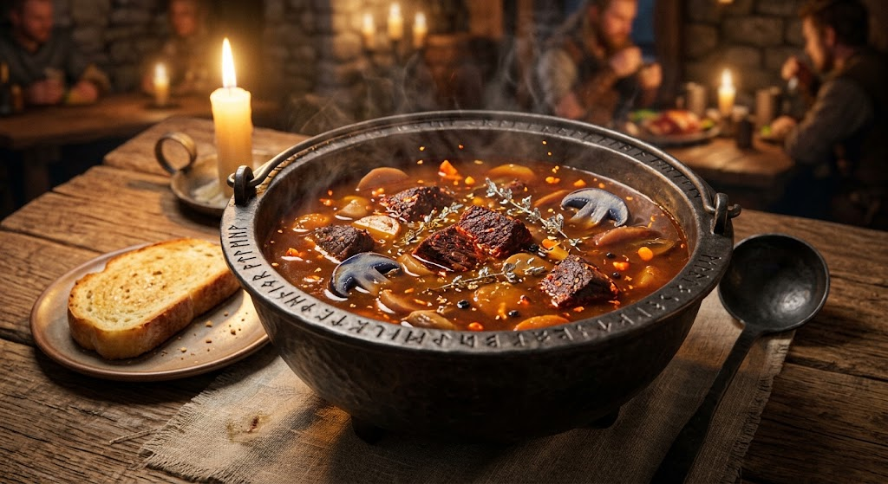

Home
Dragonfire Crimson Stew

Description
A legendary hearty dish favored by adventurers braving the northern mountain passes. Dragonfire Crimson Stew is famed for its intense, warming spices and rich savory flavor that grants temporary resistance to freezing winds. Each bowl packs a smoky, spicy punch with a subtle sweet finish.
Ingredients
- 1.5 lbs Phoenix-dusted beef (or venison cutlets), cubed
- 2 tbsp Sun-fire oil (or hot chili oil)
- 3 cloves Shadow-garlic, finely chopped
- 1 medium Ember-onion, diced
- 2 cups Starlight broth (or rich beef stock)
- 1 cup Blood-orange juice
- 1 cup Moon-mushrooms (or wild shiitake), sliced
- 1 tsp Dragon's-breath chili powder (or smoked paprika with cayenne)
- 1 sprig Silver-thyme (or fresh thyme)
- Salt and crushed void-peppercorns to taste
Instructions
- Heat the sun-fire oil in a heavy cast-iron cauldron over a medium-high campfire.
- Season the meat cubes with salt and void-peppercorns, then sear until deeply browned on all sides.
- Add the ember-onion and shadow-garlic to the cauldron, sautéing until soft and fragrant.
- Stir in the dragon's-breath chili powder to bloom the spices in the hot oil for 30 seconds.
- Pour in the starlight broth and blood-orange juice, scraping up any delicious golden browned bits from the bottom of the pot.
- Toss in the sliced moon-mushrooms and silver-thyme sprig. Reduce heat to low, cover, and let simmer gently for 45 minutes until the meat is melt-in-your-mouth tender.
- Ladle hot into stone bowls and serve alongside crusty elven bread for dipping.